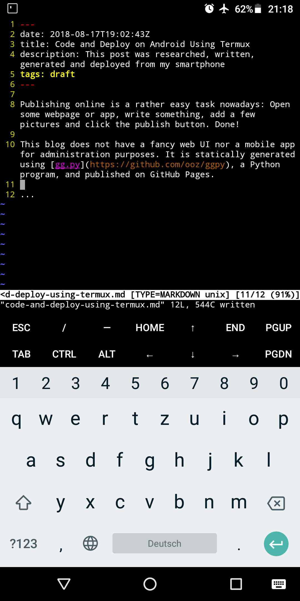

Publishing online is a rather easy task nowadays: Open some webpage or app, write something, add a few pictures and click the publish button. Done!
This blog does not have a fancy web UI nor a mobile app for administration purposes. It is statically generated using gg.py, a Python program, and published on GitHub Pages.
So for me writing a blog post is not just writing, but also running Python programs, using git and deploying the result somewhere.
If I find a way to write my blog posts on a smartphone, I could in theory write plenty of other software on it as well, right?
Termux is an Android terminal emulator featuring bash, Unix commandline tools, ssh and an apt-like package manager (incl. vim, git, Python etc.)
After configuring the keyboard and downloading my dotfiles, writing a blog post in vim looks like this:

The wiki also contains useful instructions on how to access local files on your phone from inside Termux.
Developing on a proper PC, with a proper keyboard is way faster and comfortable, of course. Knowing that I do not just have access to the Internet on a phone, but that I could also actively shape it, lets me travel more comfortably without worrying too much about bringing a laptop. :)